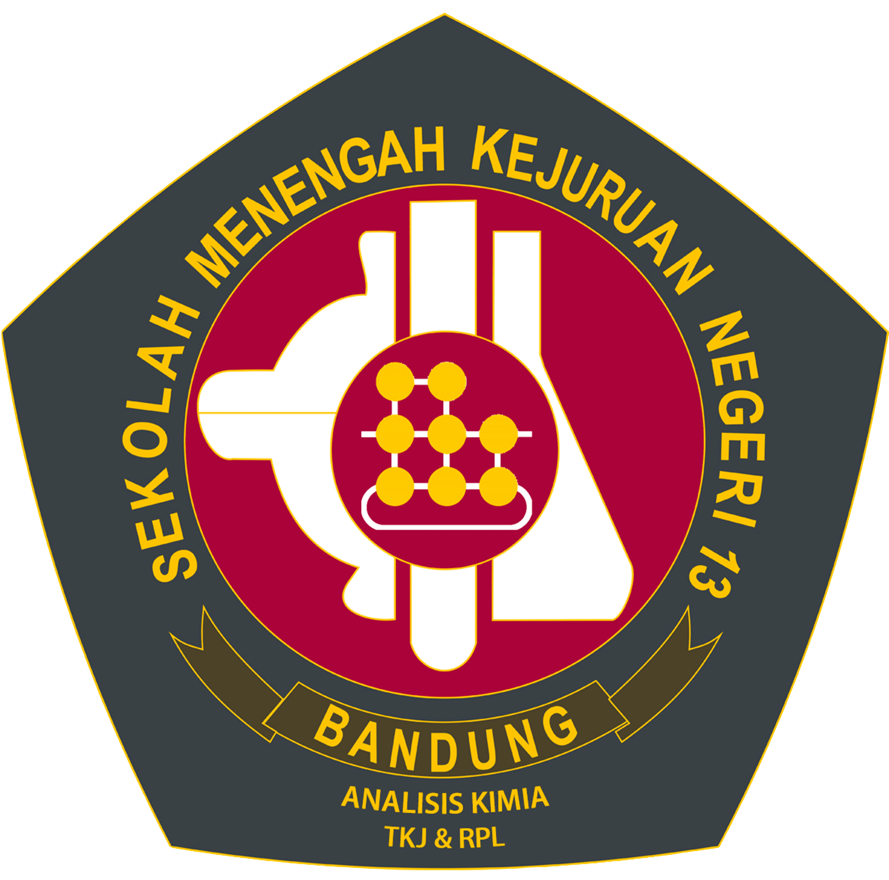

|
|
Nama | Muhammad Rafi Mahdy |
| Tempat, Tanggal Lahir | Bandung, 13 Januari 2004 | |
| Alamat | Sekedangdeur, Ujungberung, Bandung | |
| Telepon | 0812-1800-7819 | |
| rafimhdy@gmail.com | ||
| Pendidikan Terakhir | D3 Bahasa Inggris - Politeknik Negeri Bandung |
| I am a graduate from Politeknik Negeri Bandung, holding a Diploma in English, and a High School Diploma in Computer and Network Engineering from SMK Negeri 13 Bandung. I have experience working as an IT Support Technician, where I helped users solve hardware and software problems, installed and configured computer systems, and supported network setup. I am eager to apply my knowledge in IT and communication to grow as a professional in the technology field. |
|
Politeknik Negeri Bandung (2022–2025) Diploma of English GPA: 3.65/4.00 Relevant Courses: ICT, Office Management, Presentation, Multimedia Applications |
|
|  |
SMKN 13 Bandung (2019–2022) High School Diploma in Computer and Network Engineering GPA: 81.46/100 Relevant Courses: CISCO, Network Infrastructure, System Administration |
|
Diskominfo Jawa Barat (2021–2022) IT Support Technician • Provided direct assistance to users to solve technical problems. • Assisted in documenting issues and solutions for IT team. |
|
|
Freelance (2020–Present) IT Support Technician • Provided remote technical support for software issues. • Advised clients on computer maintenance and performance upgrades. |
| Hardware Troubleshooting | Software Installation & Maintenance | Networking (IP, Routing, Subnetting) |
| Operating Systems (Windows & Linux) | Remote Technical Support | Basic Server Setup |
| Microsoft Office Suite | Teamwork & Problem Solving | Time Management |
| BNSP Certification on Skills Competence Computer and Network Engineering |
| TOEIC (Score: 845) |
| IT Support Google Certification |
| Digitalent Certification on Junior Network Administrator |